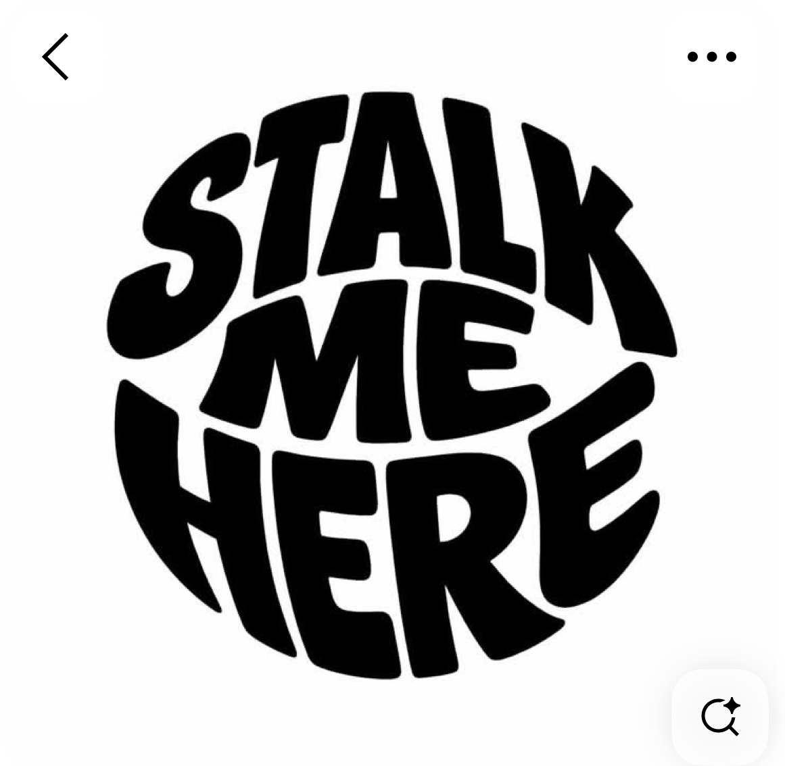
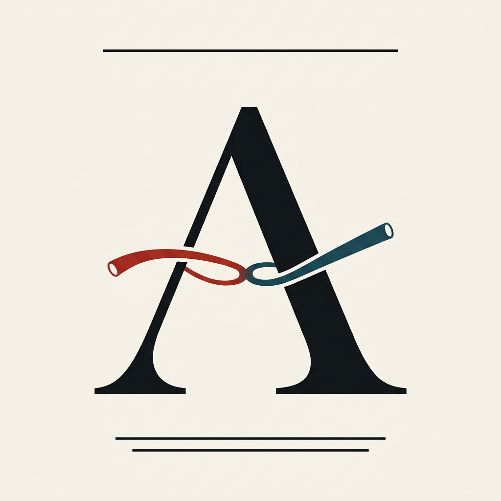
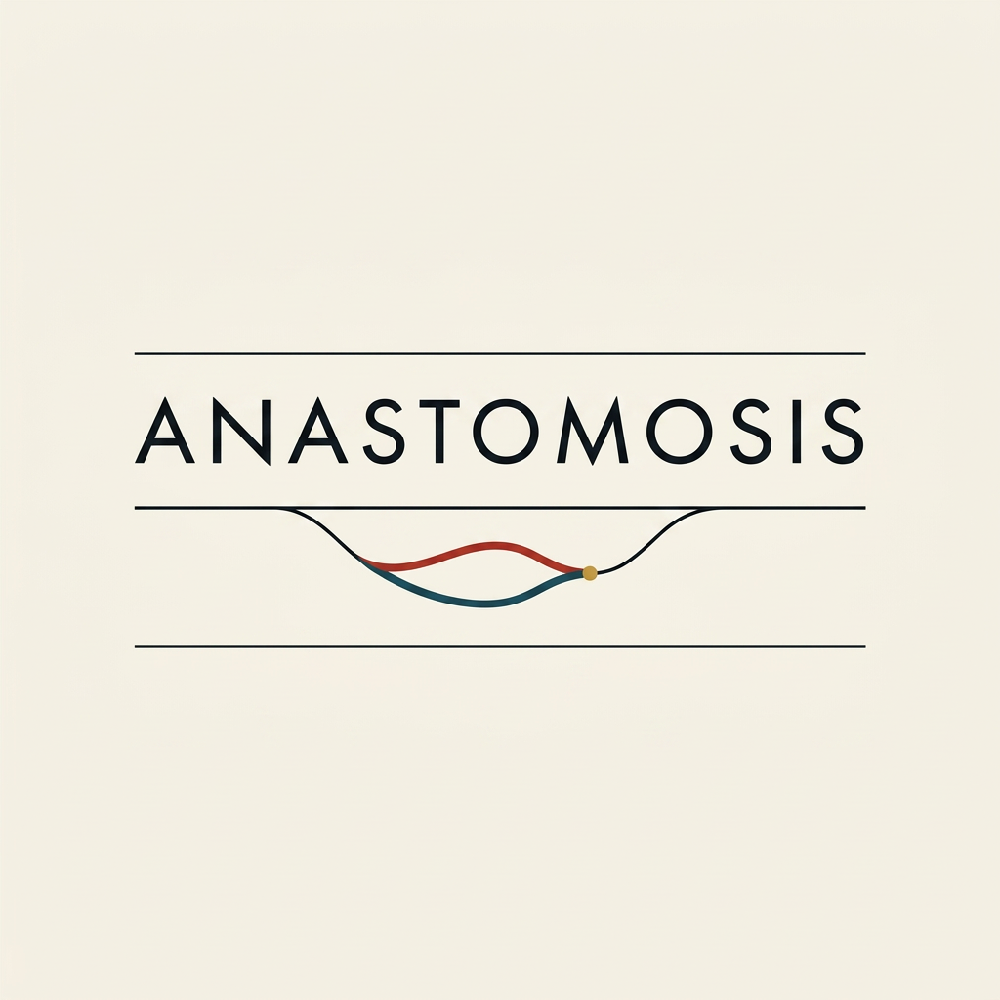
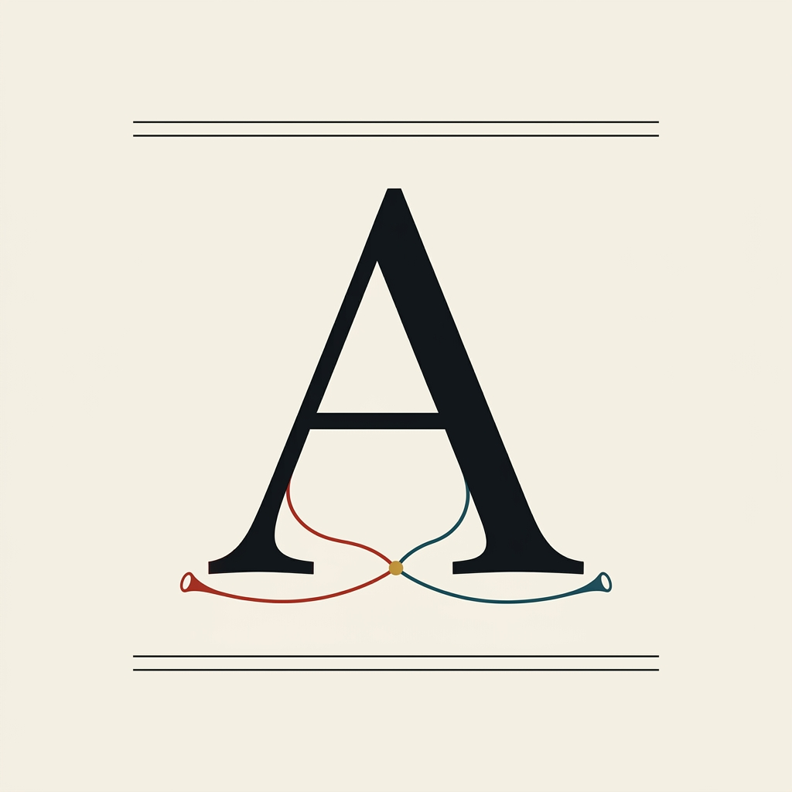
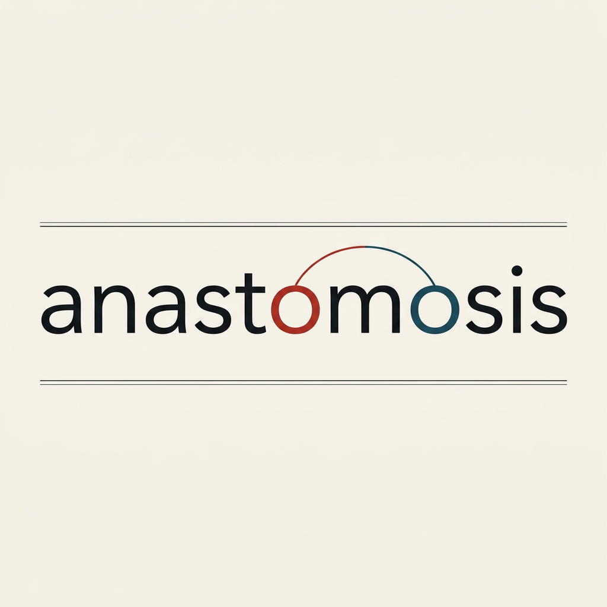
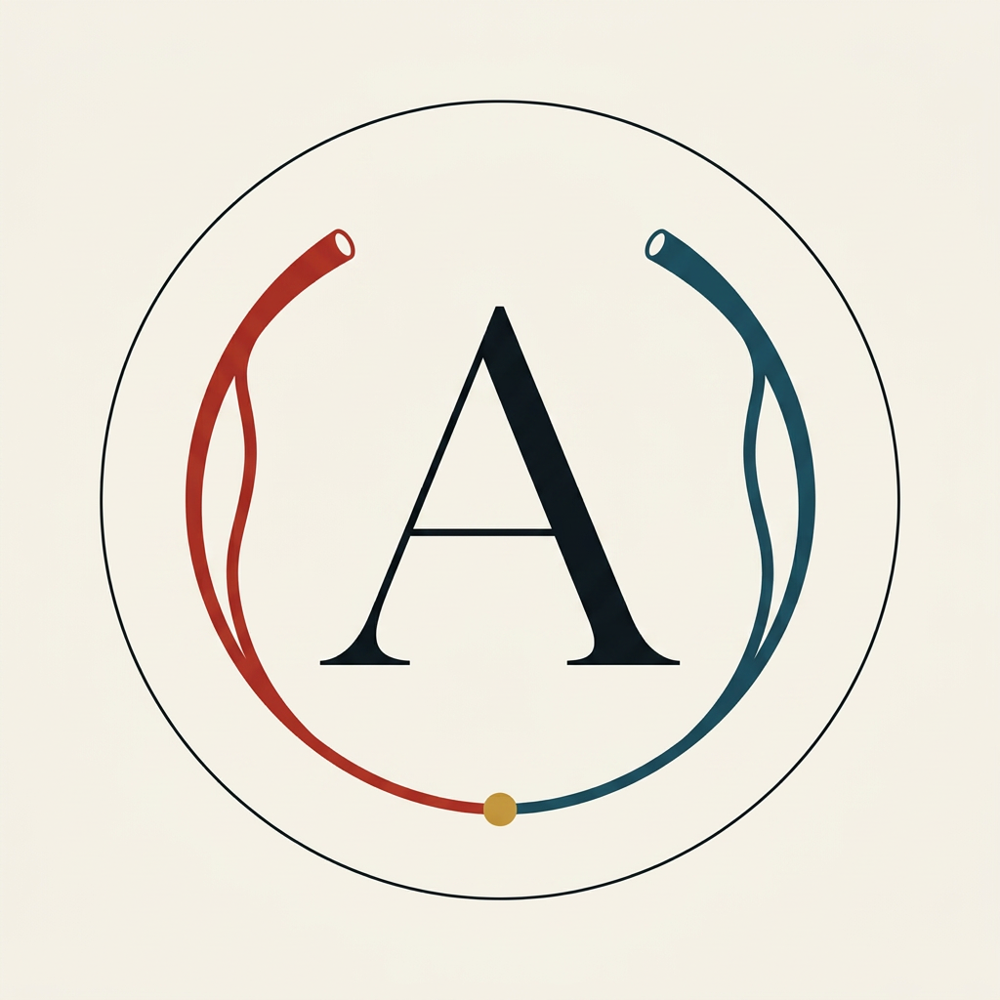

Anastomosis.MD · Logo lab · Series XXVII
The PIN series — five fonts, one borrowed idea
The vessels carry the only color. Everything else is ink on bone.
The reference (measured, not guessed): a square, strictly black-on-white editorial composition — one oversized centered letterform framed by fine hairline rules, generous margins, zero effects. We kept its soul — restraint, line language, typography as the hero — and let the anastomosis enter as the single quiet departure: two fine vessels joining, in arterial red and venous petrol, sometimes sealed with one gold point.

The borrowed idea
Oversized letterform between hairline rules. Measured at 1161×1134: one fine rule on top, a large central typographic mass, two fine rules below — classic stationery grammar. Pure monochrome. Our adaptation: bone field instead of white, brand ink instead of black, and the vessels as the only color — subtle enough to whisper, precise enough to mean something.

PIN-1 · Didone
The Didot A
Font direction: high-contrast Didone serif — hairline serifs, thick stems, luxury editorial.
The anastomosis: the A's crossbar is two vessels growing toward each other — crimson from the left, petrol from the right, open lumen mouths at the outer ends, joining at the center of the bar.
anastomosis.md
1,822 cases · 26 systems · every distractor explained
Reads as an A first, a story second — exactly the order a stranger needs.

PIN-2 · Geometric sans
The modernist wordmark
Font direction: wide-tracked geometric capitals — Futura lineage, perfectly circular O's.
The anastomosis: beneath the word, between the rules, one hairline splits into two strands that bow apart and rejoin — sealed with a single gold dot.
anastomosis.md
1,822 cases · 26 systems · every distractor explained
Wordmark rule applies: if this one wins, it gets its paired version — with and without ".md".

PIN-3 · Transitional serif
The physician's A
Font direction: classic transitional serif — bracketed serifs, old medical-textbook timelessness.
The anastomosis: the letter's strokes flow into two vessel hairlines that bow toward each other beneath the base and meet at one gold suture point — a quiet cradle.
anastomosis.md
1,822 cases · 26 systems · every distractor explained
The most scholarly of the five — the one that looks like it was always here.

PIN-4 · Humanist sans
The lowercase whisper
Font direction: refined humanist sans, lowercase, warm and contemporary.
The anastomosis: the two o's are vessel rings, joined by a hairline that arcs over the m — the word anastomoses through its own middle.
anastomosis.md
1,822 cases · 26 systems · every distractor explained
The subtlest of the set — the trick hides inside the word itself. Wordmark pairing rule applies if it wins.

PIN-5 · Display serif emblem
The circled A
Font direction: graceful display serif with thin-thick contrast, locked in a fine ring.
The anastomosis: two vessel arcs sweep the inside of the ring — crimson left, petrol right, open lumen mouths up top — and meet beneath the A's base at one gold point: the letter embraced by the join.
anastomosis.md
1,822 cases · 26 systems · every distractor explained
Born for the circular crop — the emblem was designed inside the circle from the first stroke.